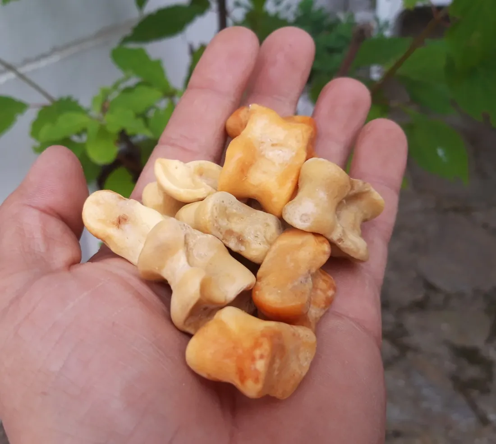
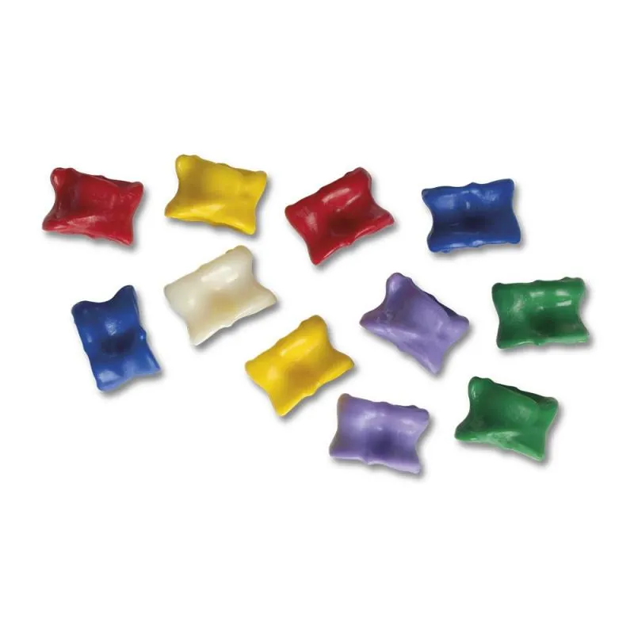

Extreure l’astràgal
Si us donen el tros de pota sencer, bulliu-lo una hora: la carn i els tendons s’estoven i els ossos se separen gairebé amb els dits. Busqueu l’astràgal entre els ossets del garró.
Neteja i preparació
Del garró al joc: un procés artesanal de sis passos perquè l’astràgal quedi net, blanc, sense pudor i resistent als cops. Calen paciència, unes quantes eines de cuina i un adult.
Si us donen el tros de pota sencer, bulliu-lo una hora: la carn i els tendons s’estoven i els ossos se separen gairebé amb els dits. Busqueu l’astràgal entre els ossets del garró.
Bulliu les tabes de 30 a 60 minuts amb aigua i un raig de rentaplats (o una mica de bicarbonat). L’os cru té greix i medul·la als porus i, si no es treuen, amb el temps fa pudor.
Traieu les restes de tendó i cartílag amb un raspall de dents vell, unes pinces o un ganivet petit (aquest, l’ha de fer servir un adult). Antigament s’hi feia servir cendra de fusta, o es deixaven els ossos vora un formiguer perquè les formigues els netegessin.
Submergiu-les en aigua oxigenada unes hores o tota una nit. La de 10 volums, la de farmàcia, ja és suficient. Mai lleixiu: blanqueja, però «crema» l’os per dins, que es torna trencadís i acaba fent pols amb els cops del joc.
Deixeu-les assecar a l’aire un parell de dies, a l’ombra: el sol directe i fort les pot esquerdar. Si voleu, poliu les arestes amb paper de vidre fi perquè s’aturin millor quan cauen.
Al joc d’habilitat, una de les cinc tabes és la mare (o el pare, o el comodí) i es pinta d’un color viu. Es pot tenyir amb pell de ceba (daurat), remolatxa (vermellós) o safrà (groc). Les àvies feien servir anilina. Avui també es fa servir pintura acrílica o esmalt d’ungles, i al final una capa de vernís.


Comparar materials
Els jocs comercials (de plàstic, de metall o de resina) imiten la forma de l’astràgal. Comparar-los amb les tabes d’os ajuda a entendre què es guanya i què es perd amb cada material.
| Material | Avantatges | Inconvenients |
|---|---|---|
| Os d’ovella o de cabra | Autèntic, cada peça és única, pes i so tradicionals, gairebé de franc. | Cal preparar-lo i té un procés de neteja delicat. |
| Plàstic comercial | Higiènic, de colors i totes les peces iguals. | Lleuger, cau diferent i sona diferent. |
| Impressió 3D | Es pot copiar una taba real i treballar el disseny. | Cal impressora, i el pes i el centre de gravetat canvien. |
